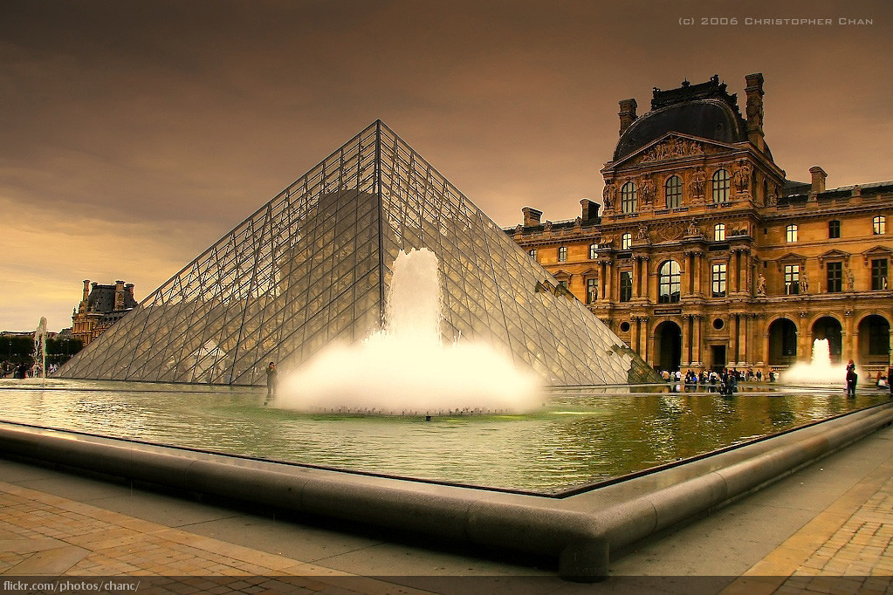

French culture is famous for its diversity. From world-famous artists to delicious food to wine and so much more, French culture can't be beat!
An important and delicious aspect of French culture is food! With world-famous restaurants and extravagant dishes, it will not disappoint. Read more about food here.
A trip to France would not be complete without taking a look at the beautiful art and architecture. In fact, it’s almost impossible to miss it! French art can be found all over the world, and its influences are omnipresent throughout history. Below is a list of some famous French artists you’ll want to check out:
While some of these artists were not originally born in France, many produced much of their most influential pieces of art in the country. While in France, make sure to check out some of the many museums and institutions across the country that offer an up-close view of these masterpieces.
France, more specifically Paris, is the fashion capital of the world. With houses like Chanel, Louis Vuitton, Christian Dior, and Hermes, Paris’s fashion scene is like none other in the world. Beyond these luxury designers, French people pride themselves on their clothing and accessories, meaning you are sure to see some unique and awe-inspiring outfits.